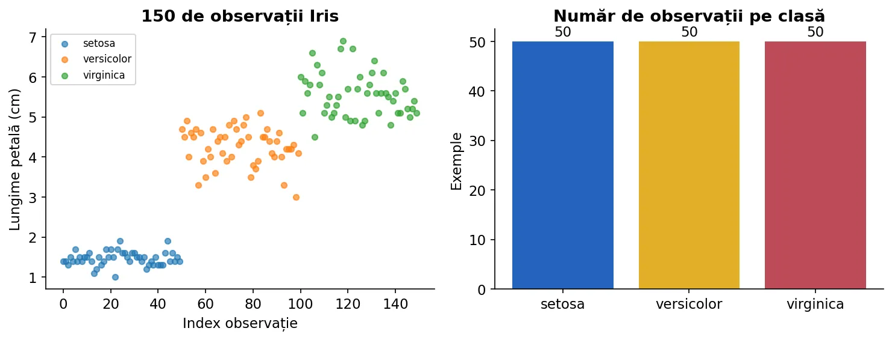
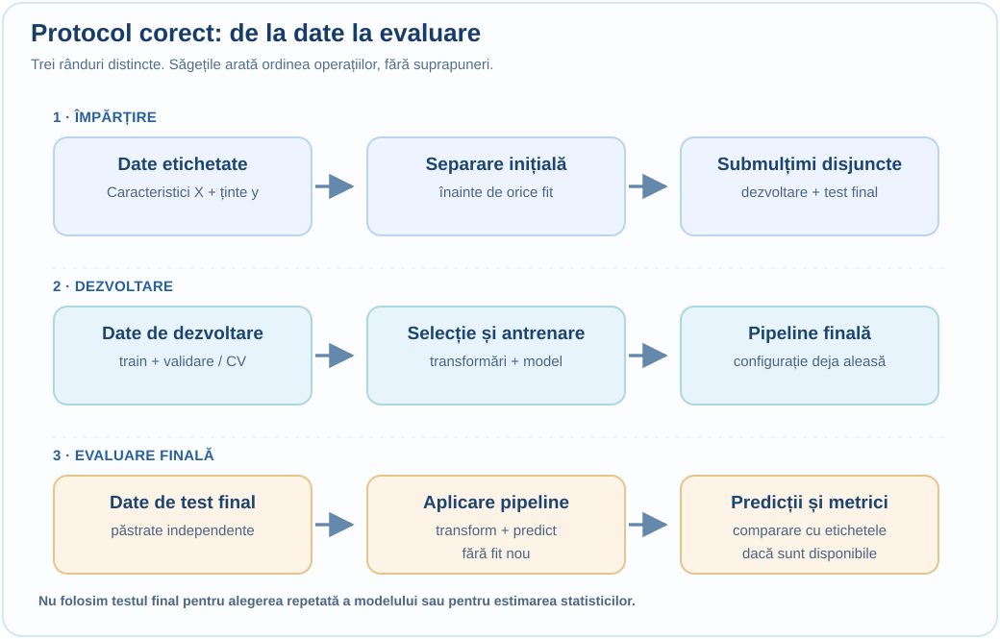
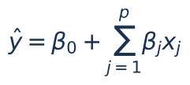
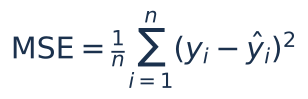
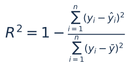
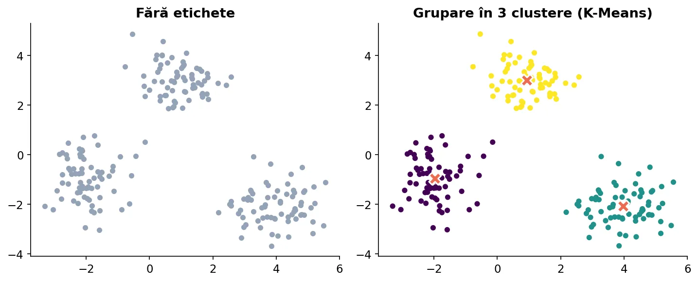
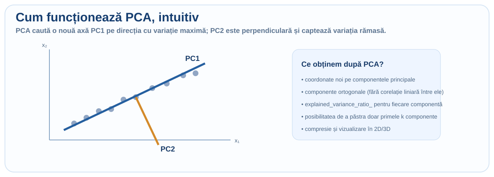
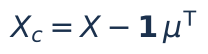
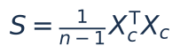
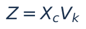

Introducere în scikit-learn
Un ghid vizual și practic al întregului experiment: împărțirea datelor, preprocesare corectă, pipeline-uri, stratificare, evaluare, validare încrucișată și alegerea hiperparametrilor. Fiecare etapă este explicată pe exemple de clasificare și regresie.
1. De ce scikit-learn?
O bibliotecă Python care pune la dispoziție algoritmi și un mod de lucru consecvent.
Scikit-learn (importat prin sklearn) oferă implementări pentru clasificare, regresie, clustering, transformarea caracteristicilor și evaluarea modelelor. Biblioteca se bazează pe NumPy și se folosește frecvent împreună cu Pandas și Matplotlib.
Scopul acestei introduceri este să înțelegi fluxul comun al unui experiment. Regresia liniară, regresia logistică, K-NN, arborii și SVM vor fi studiate separat în capitolul Învățare supervizată.
python -m pip install scikit-learn matplotlib pandas. Într-un notebook Jupyter poți folosi %pip install scikit-learn. Numele pentru instalare este scikit-learn, iar pentru import este sklearn.Preprocesarea modifică reprezentarea datelor înainte ca modelul să învețe: completăm valori lipsă, scalăm coloane numerice, transformăm categorii în numere, eliminăm sau construim caracteristici. Unele operații au parametri de învățat (media, mediana, minimul, maximul, vocabularul de categorii); altele sunt reguli fixe (de exemplu, transformarea np.log1p cu o regulă prestabilită). Când există parametri învățați, îi estimăm numai din train.
fit pe train3. transform pe train4. transform pe validare/test5. Evaluezi fără a reînvăța2. Date de intrare: X și y
Fiecare rând din X reprezintă o observație, iar fiecare coloană o caracteristică.
Pentru o problemă supervizată, matricea X are de regulă forma (n_samples, n_features), iar vectorul y conține ținta corespunzătoare fiecărei observații. În clasificare, y este o etichetă discretă; în regresie, de regulă o valoare numerică.
import numpy as np X = np.array([ [2.5, 1.2], [3.7, 1.8], [1.9, 0.9], ]) y = np.array([0, 1, 0]) print(X.shape) # (3, 2): 3 observații, 2 caracteristici print(y.shape) # (3,)
predict ca [[2.5, 1.2]], nu ca [2.5, 1.2], deoarece API-ul așteaptă două dimensiuni.3. Seturi de date disponibile în bibliotecă și date externe
Seturi incluse în scikit-learn, dar și fluxul corect pentru un fișier CSV propriu.
Scikit-learn oferă câteva seturi clasice gata de folosit prin sklearn.datasets. Sunt foarte utile pentru primele experimente, pentru că te lasă să te concentrezi pe fluxul de lucru, nu pe descărcarea și curățarea datelor.
Date incluse în bibliotecă
load_iris(), load_wine(), load_diabetes() sau fetch_california_housing() sunt bune pentru exemple rapide. Primele două sunt de clasificare, ultimele două ilustrează regresia.
Date externe
În practică vei lucra des cu fișiere CSV, Excel sau baze de date. De regulă citești tabelul cu Pandas, alegi coloanele pentru X, iar coloana-țintă devine y.

from sklearn.datasets import load_iris X, y = load_iris(return_X_y=True) print(X.shape) # (150, 4) print(y.shape) # (150,) print(set(y)) # {{0, 1, 2}}
Exemplu complet cu un fișier CSV extern
Dacă ai un fișier propriu, de exemplu elevi.csv, fluxul devine:
import pandas as pd from sklearn.model_selection import train_test_split # Exemplu: ultima coloană este ținta # nume, varsta, medie, absente, admis df = pd.read_csv("elevi.csv") print(df.head()) X = df.drop(columns=["admis"]) y = df["admis"] X_train, X_test, y_train, y_test = train_test_split( X, y, test_size=0.2, random_state=42, stratify=y ) print(X_train.shape, X_test.shape)
X conține caracteristicile pe baza cărora modelul învață; y conține răspunsul corect. Pentru clasificare, y este de obicei o clasă; pentru regresie, y este o valoare numerică.
| Tip de set | Exemple | Avantaj | Atenție |
|---|---|---|---|
| Set inclus | load_iris(), load_diabetes() | Pornești imediat | Nu reflectă întotdeauna toate problemele datelor reale |
| CSV propriu | pd.read_csv(...) | Foarte apropiat de situațiile reale | Trebuie să gestionezi lipsuri, categorii, tipuri de date |
| Date oficiale de concurs | train.csv / test.csv | Exact contextul problemei | Etichetele pentru test pot lipsi complet |
4. Separarea datelor: train, validare și test
De ce separăm datele, ce înseamnă stratificarea și cum diferă clasificarea de regresie.
În orice proiect serios, separarea datelor se face înainte de preprocesare. Vrem să simulăm cât mai corect momentul în care modelul întâlnește exemple noi.

1. Împărțire
2. Dezvoltare
3. Evaluare

1. Învățăm transformarea
2. Aplicăm transformarea
3. Folosim datele procesate
Ce rol au seturile?
Train
Modelul și transformările învață din acest set. Aici se estimează mediile, deviațiile standard, categoriile observate, coeficienții modelului etc.
Validare
Este folosită pentru comparații între modele sau între hiperparametri. Dacă folosești validare încrucișată, rolul de validare este jucat pe rând de fiecare fold.
Test final
Se consultă la final, după ce toate deciziile sunt luate. Nu se folosește pentru a decide ce model este „mai bun”.
Set de dezvoltare
În multe materiale apare noțiunea de development set: totalitatea datelor pe care ai voie să optimizezi (train + validare / fold-uri CV), fără testul final.
Ce face stratify la train_test_split?
Pentru clasificare, stratify=y cere ca împărțirea să păstreze aproximativ proporțiile claselor din țintă. Dacă întregul set are 70% exemple din clasa A și 30% din clasa B, atunci și submulțimile rezultate vor respecta aproximativ aceeași proporție.
Stratificare interactivă
Comparație între stratify=y și stratify=X[:, 0].
| Context | Are sens să folosești stratify? | Cum? | Comentariu |
|---|---|---|---|
| Clasificare | Da, de obicei | stratify=y | Păstrează proporțiile claselor, mai ales când clasele sunt dezechilibrate. |
| Regresie | Nu direct, în general | De obicei stratify=None | y este continuu; dacă fiecare valoare este aproape unică, stratificarea nu mai are semnificație naturală. |
| Regresie cu distribuție foarte dezechilibrată | Uneori, cu grijă | binning manual al lui y | Poți discretiza ținta în intervale, dar această tehnică trebuie justificată și nu este obligatorie. |
stratify=y și stratify=X[:,0]stratify=y păstrează distribuția răspunsului pe care vrem să-l prezicem. stratify=X[:,0] păstrează distribuția unei caracteristici de intrare. Uneori și aceasta poate fi utilă, dar scopul este diferit.
Clasificare vs. regresie
În clasificare
Ținta aparține unui număr finit de clase. De aceea, păstrarea proporțiilor prin stratify=y are o interpretare clară și este frecvent recomandată.
În regresie
Ținta este numerică și poate lua foarte multe valori distincte. De cele mai multe ori nu stratifici direct. Te interesează mai mult o împărțire rezonabilă și măsuri potrivite ale erorii.
5. Interfața comună: fit, predict, score și alte metode utile
Aceeași interfață pentru modele diferite: de aici vine mare parte din eleganța lui scikit-learn.
Un mare avantaj al bibliotecii este interfața comună. Indiferent că lucrezi cu un arbore, o regresie logistică, un K-NN sau un regressor liniar, structura de bază rămâne asemănătoare.
Metode și atribute întâlnite des
| Element | Rol | Exemplu | Observație |
|---|---|---|---|
fit(X, y) | Antrenează modelul | tree.fit(X_train, y_train) | Returnează de regulă chiar obiectul antrenat. |
predict(X) | Produce ieșiri | tree.predict(X_test) | În clasificare întoarce clase; în regresie valori numerice. |
score(X, y) | Metrică implicită | tree.score(X_test, y_test) | La clasificare este deseori acuratețe; la regresie, de multe ori R². |
predict_proba(X) | Probabilități pe clase | logreg.predict_proba(X_test) | Nu toate modelele implementează această metodă. |
get_params() | Arată hiperparametrii | tree.get_params() | Util înainte de GridSearchCV. |
atribute terminate în _ | Valori învățate la fit | classes_, coef_, feature_importances_ | În scikit-learn, sufixul _ indică ceva disponibil după antrenare. |
from sklearn.datasets import load_iris from sklearn.model_selection import train_test_split from sklearn.tree import DecisionTreeClassifier from sklearn.metrics import accuracy_score X, y = load_iris(return_X_y=True) X_train, X_test, y_train, y_test = train_test_split( X, y, test_size=0.25, random_state=42, stratify=y ) model = DecisionTreeClassifier(max_depth=3, random_state=42) model.fit(X_train, y_train) # învață arborele pred = model.predict(X_test) # produce clase prezise acc = accuracy_score(y_test, pred) # metrică explicită print(model.get_params()) # hiperparametrii curenți print(model.classes_) # clasele învățate print(acc)
Ce sunt hiperparametrii?
Sunt valorile setate înainte de antrenare: max_depth, n_neighbors, C, alpha etc. Ele controlează flexibilitatea sau regularizarea modelului.
Ce sunt parametrii învățați?
Sunt valorile obținute la fit: de exemplu coeficienții unei regresii sau structura efectivă a unui arbore. Acestea depind de date.
Exemple de contexte
- Arbori de decizie: pornești de la
DecisionTreeClassifiersauDecisionTreeRegressor; hiperparametru-cheie:max_depth. - Modele liniare: pornești de la
LinearRegression,Ridge,Lasso,LogisticRegression; hiperparametri importanți:alpha,C. - K-NN: pornești de la
KNeighborsClassifiersauKNeighborsRegressor; hiperparametri importanți:n_neighbors,weights,metric.
6. Regresia în scikit-learn: modele, exemple și puncte de pornire
Mai mult decât un singur exemplu: cum gândești o problemă de regresie și de unde pornești în practică.
În regresie, ținta y este numerică: preț, temperatură, consum, durată, scor, număr de vizitatori etc. Vrem să aproximăm o relație dintre intrări și o valoare continuă.

Primul model: regresia liniară

Coeficienții β₀,...,βₚ sunt estimați la fit. Pentru o singură caracteristică rezultă o dreaptă.
import numpy as np from sklearn.linear_model import LinearRegression from sklearn.model_selection import train_test_split X = np.array([[40], [50], [60], [70], [80], [90], [100]]) y = np.array([82, 98, 119, 138, 161, 185, 207]) X_train, X_test, y_train, y_test = train_test_split( X, y, test_size=0.25, random_state=42 ) model = LinearRegression() model.fit(X_train, y_train) print("coef_ =", model.coef_) print("intercept_ =", model.intercept_) print("predicție pentru 75 m² =", model.predict([[75]]))
Unde găsești modele de regresie în documentație?
| Familie | Clase de început | Când merită încercate | Hiperparametri utili |
|---|---|---|---|
sklearn.linear_model | LinearRegression, Ridge, Lasso | Relații aproximativ liniare, baseline puternic | alpha, fit_intercept |
sklearn.neighbors | KNeighborsRegressor | Relații nelineare locale, puține date | n_neighbors, weights, metric |
sklearn.tree | DecisionTreeRegressor | Relații nelineare ușor de explicat | max_depth, min_samples_leaf |
sklearn.ensemble | RandomForestRegressor | Performanță bună pe multe seturi tabelare | n_estimators, max_depth |
LinearRegression
Bun ca punct de plecare. Dacă relația este aproape liniară și caracteristicile sunt bine alese, poate fi surprinzător de competitiv.
Ridge și Lasso
Adaugă regularizare. Ridge stabilizează coeficienții; Lasso poate împinge unii coeficienți exact la zero.
Arbori / RandomForest
Captează relații nelineare și interacțiuni fără să fie nevoie de o formulă explicită.
KNeighborsRegressor
Prezice din vecini apropiați; este sensibil la scalarea caracteristicilor și la alegerea lui k.
Pentru un set tabelar, un traseu sănătos este: LinearRegression sau Ridge ca baseline, apoi RandomForestRegressor și eventual KNeighborsRegressor dacă relația pare locală și poți scala datele.
7. Preprocesarea caracteristicilor, pas cu pas
Ce înseamnă preprocesarea, când este necesară și cum se aplică corect pe train și pe test.
Preprocesarea înseamnă orice transformare aplicată caracteristicilor X înainte de model: completarea valorilor lipsă, scalare, codificare de categorii, normalizare etc. Nu există o singură rețetă universală; alegerea depinde de date și de model.
fit învață regulile transformării din train. transform aplică aceeași regulă pe train, validare, test și exemple complet noi. Nu refacem statistica pe test.
Transformări explicate pas cu pas
Alege un transformator și urmărește separat ce se întâmplă pe train și pe test.
Când este util fiecare transformator?
| Transformator | Ce învață din train | Când ajută | Atenție |
|---|---|---|---|
StandardScaler | Media și abaterea standard pe coloană | Variabile pe scări diferite; modele sensibile la scară | Nu elimină valorile extreme; nu garantează distribuție normală |
MinMaxScaler | Minimul și maximul pe coloană | Când e util un interval fix pe train, de pildă [0, 1] | Testul poate avea valori sub 0 sau peste 1; nu este eroare |
RobustScaler | Mediana, Q1 și Q3 | Caracteristici cu valori extreme | Nu elimină outlierii; doar folosește statistici mai robuste |
SimpleImputer | Media, mediana sau categoria frecventă | Valori lipsă, inclusiv lipsuri pe test | Nu estimăm media din test; uneori ajută indicatori de lipsă |
OneHotEncoder | Categoriile observate pe train | Categorii nominale (oraș, tip, culoare) | handle_unknown="ignore" tratează categorii noi prin zerouri |
OrdinalEncoder | Categoriile și corespondența lor cu numere | Atribute cu ordine explicită sau unele modele | Codurile 0, 1, 2 pot sugera o ordine artificială |
Normalizer | Nu învață parametri globali; normalizează fiecare rând | Vectori de text și comparații de direcție / cosinus | Nu este același lucru cu StandardScaler; nu folosește media coloanelor |
Exemplu practic: tabel cu numere, lipsuri și categorii
Un magazin vrea să prezică dacă un produs va fi returnat. Coloanele numerice (preț, timp de livrare) au valori lipsă; coloana categorie este textuală. ColumnTransformer definește două fluxuri paralele, reunite înainte de clasificator.
import pandas as pd from sklearn.compose import ColumnTransformer from sklearn.impute import SimpleImputer from sklearn.linear_model import LogisticRegression from sklearn.model_selection import train_test_split from sklearn.pipeline import make_pipeline from sklearn.preprocessing import OneHotEncoder, StandardScaler X = pd.DataFrame({ "pret": [10, 15, None, 22, 30, 12, 27, 8], "livrare_zile": [2, 5, 1, None, 4, 2, 7, 1], "categorie": ["A", "B", "A", "C", "B", "A", "C", "B"] }) y = [0, 1, 0, 1, 1, 0, 1, 0] X_train, X_test, y_train, y_test = train_test_split( X, y, test_size=0.25, stratify=y, random_state=42 ) numeric = make_pipeline(SimpleImputer(strategy="median"), StandardScaler()) categoric = make_pipeline( SimpleImputer(strategy="most_frequent"), OneHotEncoder(handle_unknown="ignore") ) preprocess = ColumnTransformer([ ("num", numeric, ["pret", "livrare_zile"]), ("cat", categoric, ["categorie"]) ]) pipe = make_pipeline(preprocess, LogisticRegression(max_iter=1000)) pipe.fit(X_train, y_train) # învață DOAR din train print(pipe.predict(X_test)) # aplică transformările învățate print(pipe.predict(pd.DataFrame([ {"pret": 17, "livrare_zile": 3, "categorie": "D"} ]))) # "D" nu a existat în train
8. make_pipeline: ce se execută la fiecare pas?
Un flux unic și sigur pentru transformări + model, explicat vizual și operațional.
O pipeline este un obiect unic care leagă transformările și modelul final. Avantajul major este că reduce erorile de protocol: când scrii pipe.fit(X_train, y_train), știi că transformările vor fi învățate corect doar din train.
Ce execută pipeline-ul?
Comută între antrenare și predicție, apoi parcurge pașii.
De ce make_pipeline este atât de util?
- Eviți să uiți transformarea pe test sau să faci din greșeală
fitpe date care nu trebuie văzute. - În validarea încrucișată, fiecare fold primește automat o pipeline nouă, neantrenată. Nu „se moștenesc” statisticile între fold-uri.
- În
GridSearchCV, hiperparametrii transformatoarelor și ai modelului pot fi optimizați împreună.
from sklearn.datasets import load_iris from sklearn.linear_model import LogisticRegression from sklearn.model_selection import train_test_split from sklearn.pipeline import make_pipeline from sklearn.preprocessing import StandardScaler X, y = load_iris(return_X_y=True) X_train, X_test, y_train, y_test = train_test_split( X, y, test_size=0.25, random_state=42, stratify=y ) pipe = make_pipeline( StandardScaler(), LogisticRegression(max_iter=1000) ) pipe.fit(X_train, y_train) print(pipe.predict(X_test)) print(pipe.score(X_test, y_test))
Observație importantă pentru ONIA
La fit, fiecare transformator și model își estimează parametrii pe baza datelor train. La predict sau transform pe test, acei parametri sunt deja fixați. Cu alte cuvinte: pe test nu mai înveți, doar aplici.
9. Matricea de confuzie: citire, desen și cod
Cum citești corect liniile, coloanele, diagonala și rolul culorilor într-o heatmap.
Matricea de confuzie arată câte exemple din fiecare clasă reală au fost prezise în fiecare clasă posibilă. În multe probleme de clasificare, ea este mai informativă decât un singur număr precum acuratețea, pentru că îți spune unde greșește modelul.
Rânduri
Rândul i corespunde clasei reale i. Privind pe rând, observi cum s-au împărțit exemplele adevărate ale unei clase între predicțiile posibile.
Coloane
Coloana j corespunde clasei prezise j. Privind pe coloană, vezi câte exemple au fost etichetate de model drept clasa j.
Diagonală
Elementele de pe diagonală sunt predicții corecte: clasa reală coincide cu clasa prezisă.
În afara diagonalei
Aici apar confuziile. De exemplu, „real 2, prezis 1” înseamnă exemple din clasa 2 confundate cu clasa 1.
Matrice interactivă
Schimbă numărul de clase și apasă pe o celulă. Lângă diagramă, culoarea mai intensă înseamnă o valoare mai mare.
De ce sunt utile culorile?
O heatmap nu înlocuiește numerele, ci le face mai ușor de citit. O culoare mai intensă marchează o valoare mai mare. La multe clase, această convenție te ajută să vezi rapid dacă performanța este concentrată pe diagonală sau dacă apar benzi de confuzie între clase apropiate.
În probleme cu multe clase, diagonală puternică = model bun; blocuri sau benzi în afara diagonalei = clase care seamănă între ele. De aceea, pentru un set de 8 sau 10 clase, matricea de confuzie devine un instrument vizual esențial.
from sklearn.metrics import confusion_matrix, ConfusionMatrixDisplay import matplotlib.pyplot as plt # Exemplu complet, cu etichete reale și etichete prezise y_test = [0, 0, 1, 1, 2, 2, 2] y_pred = [0, 1, 1, 1, 2, 0, 2] cm = confusion_matrix(y_test, y_pred) print(cm) # Varianta vizuală directă ConfusionMatrixDisplay.from_predictions(y_test, y_pred) plt.show() # Sau, dacă ai deja matricea calculată: disp = ConfusionMatrixDisplay(confusion_matrix=cm) disp.plot(cmap="Blues", values_format="d") plt.show()
Acest cod face trei lucruri distincte: confusion_matrix(y_test, y_pred) calculează tabelul numeric; print(cm) îl afișează ca tablou; iar ConfusionMatrixDisplay construiește reprezentarea vizuală cu axele și scara de culoare.
10. Evaluarea regresiei
Metrici explicate intuitiv și printr-un mic simulator interactiv.
În regresie nu numărăm clase corecte, ci comparăm numeric valorile reale cu cele prezise. Cele mai populare măsuri de bază sunt MAE, MSE și R².
MAE
Media erorilor absolute: tratează liniar toate abaterile. Este ușor de interpretat, fiind în aceleași unități ca ținta.
MSE
Media erorilor pătratice: penalizează mai puternic erorile mari. Este foarte folosită în optimizare.
RMSE
Rădăcina lui MSE. Revine în unitățile originale ale țintei și este adesea mai intuitivă.
R²
Măsoară cât de multă variație explică modelul față de o predicție constantă (media valorilor reale din setul evaluat).
Formule matematice de bază

Media valorilor absolute ale erorilor, în unitățile țintei.

Erorile mari sunt penalizate pătratic.

Rădăcina pătrată a MSE, în unitățile țintei.

Comparație cu predicția constantă egală cu media țintelor evaluate; R² poate fi negativ.
Metrici de regresie interactive
Mută predicția evidențiată și observă cum se schimbă MAE și MSE.
from sklearn.metrics import mean_absolute_error, mean_squared_error, root_mean_squared_error, r2_score import numpy as np y_real = np.array([3.0, 5.0, 4.0, 6.0]) y_pred = np.array([2.5, 4.0, 4.5, 5.5]) mae = mean_absolute_error(y_real, y_pred) mse = mean_squared_error(y_real, y_pred) rmse = root_mean_squared_error(y_real, y_pred) r2 = r2_score(y_real, y_pred) print(mae, mse, rmse, r2)
11. Validarea încrucișată: K-fold, de la zero
Mai multe antrenări independente pentru o estimare mai stabilă a performanței.
Validarea încrucișată (cross-validation, CV) ne oferă o evaluare mai stabilă decât un singur split, pentru că repetă antrenarea și validarea pe partiții diferite ale datelor de dezvoltare.
K-fold pas cu pas
Schimbă numărul de fold-uri și plimbă-te prin iterații.
- Împarți setul de dezvoltare în
Kfold-uri. - La fiecare iterație, un fold devine validare, iar celelalte
K-1formează antrenarea. - Se pornește de la un model nou pentru fiecare iterație. Nu continuăm antrenarea modelului precedent.
- La final, agregi scorurile de validare (de obicei media).
Da. Într-un K-fold clasic, la fiecare iterație se creează un estimator nou. Dacă ai și o pipeline, fiecare fold primește propria pipeline neantrenată.
Diferența dintre „test split” local și testul oficial fără etichete
Context ONIA / competiție
Adesea îți faci local un split train/validation pentru a compara modele. Setul oficial test.csv nu are etichete și este folosit doar pentru predicții. Din acest motiv, splitul tău local are rol de validare, nu de test final real.
Context real / proiect complet
Ideal păstrezi un test final independent, cu etichete, pe care îl consulți la final. Alegerea modelului se face pe setul de dezvoltare (train + CV/validare), iar testul final estimează generalizarea.
Da. Dacă ai ales configurația cea mai bună pe baza validării, este normal să reantrenezi modelul final pe cât mai multe date de dezvoltare disponibile, pentru a profita de toată informația. În competiții, de obicei reantrenezi pe tot setul etichetat disponibil înainte de a prezice testul oficial.
12. GridSearchCV: selecția hiperparametrilor explicată complet
Cum funcționează căutarea în grilă, ce rol are cv și ce înseamnă rezultatele obținute.
GridSearchCV încearcă sistematic mai multe combinații de hiperparametri și le compară prin validare încrucișată. Este una dintre cele mai importante unelte pentru reglarea automată a modelelor.
Căutare în grilă vizuală
Fiecare celulă corespunde unei combinații de hiperparametri. Poți schimba numărul de fold-uri.
Ce face parametrul cv?
Parametrul cv stabilește cum se face validarea încrucișată internă. Poate fi un număr (de exemplu cv=5), dar poate fi și un obiect precum StratifiedKFold sau KFold.
from sklearn.datasets import load_iris from sklearn.linear_model import LogisticRegression from sklearn.model_selection import GridSearchCV, StratifiedKFold, train_test_split from sklearn.pipeline import make_pipeline from sklearn.preprocessing import StandardScaler X, y = load_iris(return_X_y=True) X_train, X_test, y_train, y_test = train_test_split( X, y, test_size=0.25, random_state=42, stratify=y ) pipe = make_pipeline(StandardScaler(), LogisticRegression(max_iter=1000)) param_grid = { "logisticregression__C": [0.1, 1, 10], "logisticregression__solver": ["lbfgs", "liblinear"] } cv = StratifiedKFold(n_splits=5, shuffle=True, random_state=42) search = GridSearchCV(pipe, param_grid=param_grid, cv=cv, scoring="accuracy", refit=True) search.fit(X_train, y_train) print(search.best_params_) print(search.best_score_) print(search.best_estimator_) print(search.score(X_test, y_test))
Ce înseamnă best_params_, best_score_ și best_estimator_?
| Proprietate | Interpretare | Ce nu trebuie confundat |
|---|---|---|
best_params_ | Dicționarul hiperparametrilor câștigători. | Nu sunt coeficienții modelului și nici valorile din setul de test. |
best_score_ | Media scorurilor de validare pentru combinația aleasă. | Nu este scorul pe setul final de test. |
best_estimator_ | Pipeline/model refăcut pe toate datele transmise lui GridSearchCV.fit, dacă refit=True. | Nu este unul dintre modelele parțiale folosite în fold-uri. |
cv_results_ | Tabelul complet cu combinații, scoruri și ranguri. | Este mai bogat decât un simplu „cel mai bun rezultat”. |
best_params_există doar dupăsearch.fit(...).- „Cel mai bun” înseamnă cel mai bun conform metricii alese în
scoring. Pentru erori negative din scikit-learn, valorile pot începe cuneg_. - CV trebuie făcută pe setul de dezvoltare, nu pe testul final.
- Dacă optimizezi repetat pe același test final, îl transformi în validare și pierzi estimarea independentă.
13. Învățare nesupervizată: K-Means și PCA
Clustering și reducere dimensională explicate mai pe larg, inclusiv când folosești PCA și când este suficientă analiza caracteristicilor originale.
În învățarea nesupervizată nu avem etichete de adevăr cunoscute. Scopul poate fi să descoperim grupări, să comprimăm informația sau să vizualizăm datele într-un spațiu mai mic.

K-Means
Algoritm de clustering: fiecare observație este atribuită unuia dintre k clustere. Nu prezicem clase reale, ci construim grupări pe baza asemănării.
PCA
Algoritm liniar de reducere dimensională. Construiește componente principale noi, ortogonale, care capturează cât mai multă variație din date.

Matrice de corelație sau PCA?
| Întrebare | Analiza caracteristicilor / matrice de corelație | PCA |
|---|---|---|
| Cât de interpretabil rămâne rezultatul? | Foarte interpretabil: lucrezi cu variabilele originale. | Mai greu de interpretat: fiecare componentă este o combinație liniară de variabile. |
| Vreau să identific variabile redundante. | Da, este foarte potrivită. | Indirect: PCA comprimă redundanța, dar nu spune la fel de direct ce perechi sunt corelate. |
| Vreau o reprezentare mai mică pentru model sau vizualizare. | Mai puțin potrivită. | Da, acesta este exact rolul PCA. |
| Vreau să desenez datele multe dimensiuni în 2D. | Nu creează o proiecție nouă. | Da, alegi de obicei n_components=2. |
Dacă scopul este să înțelegi caracteristicile originale, începe cu statistici descriptive și matricea de corelație. Dacă scopul este să reduci dimensiunea, să vizualizezi date cu multe variabile sau să elimini redundanță liniară, încearcă PCA.

Experiment PCA interactiv — axe, proiecții și variație explicată
Modifică zgomotul din date și numărul de componente. Vezi cum se rotesc PC1 și PC2, unde cad proiecțiile și câtă informație reține PCA.
1. Datele și axele principale
Albastru: observații; verde: proiecțiile/reconstrucțiile după PCA. Liniile punctate sunt erorile de reconstrucție.
2. Proiecții și variație explicată
Cum funcționează PCA, intuitiv și matematic
- Centrezi datele: din fiecare coloană scazi media ei, ca norul de puncte să fie adus în jurul originii.
- Construiești matricea de covarianță, care spune cum variază împreună caracteristicile.
- Calculezi vectorii proprii ai acestei matrici. Ei devin direcțiile componentelor principale.
- Valorile proprii asociate spun câtă variație captează fiecare componentă.
- Păstrezi primele componente și proiectezi datele pe ele.
Formulele PCA, cu notație matematică

Din fiecare rând scădem vectorul mediilor caracteristicilor.

Măsoară variațiile și covariațiile în datele centrate.

Vectorii proprii sunt direcțiile; valorile proprii cuantifică variația.

Reducem fiecare observație la k coordonate pe direcțiile principale.
Exemplu numeric minimal
Calcul numeric complet: patru observații în două dimensiuni
Avem X = [[2,1], [3,2], [4,2], [5,4]]. Media este μ = (3,5; 2,25). Matricea de covarianță (eșantion, împărțire la n−1) este:
Valorile proprii sunt aproximativ λ₁ = 3,1256 și λ₂ = 0,1244. Prima componentă principală are o direcție aproximativă PC1 = (0,7169; 0,6972) (semnul poate fi inversat fără să se schimbe PCA). Ea explică 96,17% din variație, iar a doua doar 3,83%.
Proiecțiile centrate ale celor patru puncte pe PC1 sunt aproximativ [−1,947; −0,533; 0,184; 2,295] cu convenția de semn aleasă mai sus. Dacă păstrăm doar PC1, reducem fiecare observație de la 2 caracteristici la 1, conservând 96,17% din variație.
Să presupunem punctele 2D (2, 1), (3, 2), (4, 2), (5, 4). Se observă deja vizual că punctele sunt aproximativ aliniate pe o direcție diagonală. PCA va alege o primă componentă apropiată de această direcție și o a doua componentă perpendiculară pe ea.
| Pas | Idee |
|---|---|
| 1. Centrare | Scazi media fiecărei coloane; punctele se mută în jurul lui (0, 0). |
| 2. Covarianță | Dacă cele două coordonate cresc împreună, matricea de covarianță va avea termeni pozitivi în afara diagonalei. |
| 3. PC1 | Direcția cu variația maximă; în acest exemplu, aproximativ diagonala ascendentă. |
| 4. Proiecție | Fiecare punct primește coordonate noi: cât de departe este pe PC1 și pe PC2. |
from sklearn.datasets import load_iris from sklearn.cluster import KMeans from sklearn.decomposition import PCA from sklearn.pipeline import make_pipeline from sklearn.preprocessing import StandardScaler X, _ = load_iris(return_X_y=True) pipe = make_pipeline( StandardScaler(), PCA(n_components=2), KMeans(n_clusters=3, n_init=10, random_state=42) ) labels = pipe.fit_predict(X) print(labels[:10])
from sklearn.datasets import load_iris from sklearn.decomposition import PCA from sklearn.preprocessing import StandardScaler X, _ = load_iris(return_X_y=True) Xs = StandardScaler().fit_transform(X) pca = PCA(n_components=2) Z = pca.fit_transform(Xs) print(pca.components_) # direcțiile componentelor print(pca.explained_variance_ratio_)# proporția variației explicate print(Z[:5]) # coordonatele noi ale primelor exemple
Parametrii importanți pentru K-Means
n_clusters
Numărul de clustere căutate. Dacă îl setezi la 3, algoritmul va întoarce exact 3 grupuri. Alegerea lui se poate ghida prin cunoașterea problemei sau prin metode precum curba „elbow”.
n_init
K-Means pornește de la centroizi inițiali. Pentru că rezultatul poate depinde de aceste inițializări, algoritmul se rulează de mai multe ori și se păstrează soluția cea mai bună. n_init controlează de câte ori.
max_iter
Numărul maxim de pași ai algoritmului pentru o inițializare. Creșterea lui permite convergența în cazuri mai dificile, dar mărește timpul de calcul.
random_state
Fixează alegerile aleatoare, astfel încât să poți reproduce rezultatul. Pentru materiale educaționale și experimente comparative, este aproape obligatoriu.
init
Strategia de inițializare a centroizilor. De regulă, k-means++ este alegerea potrivită la început, deoarece oferă porniri mai bune decât inițializarea complet aleatoare.
Parametrii importanți pentru PCA
n_components
Numărul de componente principale păstrate. Dacă alegi 2, poți desena rezultatul în plan. Poți alege și o proporție a variației explicate, de exemplu n_components=0.95.
svd_solver
Metoda numerică folosită pentru calcul. Pentru început, valoarea implicită este suficientă în majoritatea cazurilor, dar pe seturi foarte mari unele variante pot fi mai eficiente.
whiten
Poate rescală componentele obținute astfel încât să aibă varianță unitară. Uneori ajută modele ulterioare, dar schimbă interpretarea numerică a coordonatelor PCA.
copy
Controlează dacă datele sunt copiate sau pot fi modificate intern. Nu este primul parametru de optimizat, dar este util de știut în contexte de memorie.
Atât K-Means, cât și PCA sunt sensibile la scară. De aceea, StandardScaler() înaintea lor este frecvent o idee bună. În lipsa scalării, o variabilă cu valori mult mai mari poate domina artificial distanțele și variația.
Documentație oficială: PCA și KMeans. Parametrii și valorile implicite pot varia între versiuni.
14. Recapitulare, capcane și exerciții
Fixăm ideile centrale și exersăm prin sarcini scurte cu feedback imediat.
Înainte să închei, fixează ideile centrale și verifică erorile tipice. Exercițiile sunt puse unul sub altul pentru a fi mai ușor de urmărit.
Mai întâi separi datele, apoi înveți orice transformare din train.
Poate include completare de lipsuri, codificare de categorii și transformări structurale.
score() depinde de modelNu presupune că scorul implicit are aceeași semnificație pentru toate clasele de estimatori.
Reduce leak-urile și păstrează corect protocolul în CV și GridSearchCV.
Exerciții interactive
1. Grilă
Care variantă este corectă?
2. Adevărat / Fals
Afirmație: În clasificare, stratify=y are sens pentru că păstrează distribuția claselor.
3. Adevărat / Fals
Afirmație: În regresie, stratify=y este în general folosit direct, exact ca la clasificare.
4. Corelează conceptul cu rolul
5. Completează ideea
Într-o pipeline cu scalare și regresie logistică, cheia pentru hiperparametrul C este:
6. Grilă
Ce reprezintă best_score_ în GridSearchCV?
7. Adevărat / Fals
Afirmație: În K-fold, la fiecare iterație modelul se antrenează de la zero.
8. Grilă
Pentru ce este mai util PCA?
9. Grilă
Când este adesea suficientă analiza corelațiilor dintre caracteristici, fără PCA?
10. Completează codul
Ce argument alegi pentru ca OneHotEncoder să nu dea eroare la categorii noi în test?
11. Adevărat / Fals
Afirmație: Matricea de confuzie se calculează comparând y_true și y_pred.
12. Grilă
Dacă după alegerea celui mai bun model vrei să folosești toate datele de dezvoltare, ce poți face?
15. Resurse pentru continuarea studiului
Poți continua lecția în notebookul asociat și în materialele interactive din platformă.
Recomandare de studiu
Refă exemplele întâi cu datele incluse în bibliotecă, apoi adaptează-le pentru un CSV propriu. După aceea încearcă un mic GridSearchCV și compară rezultatele cu o validare simplă.